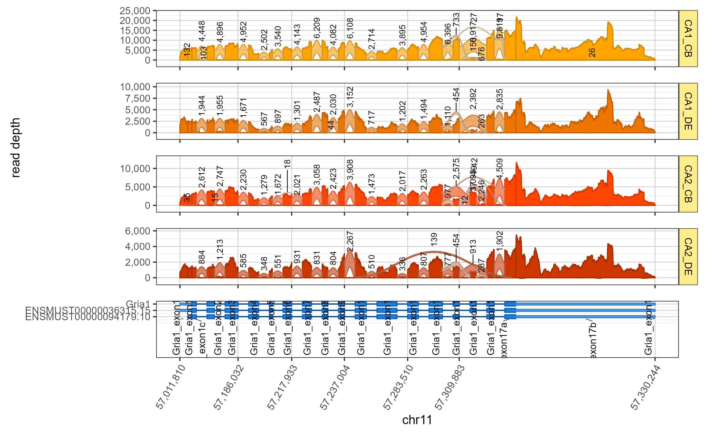
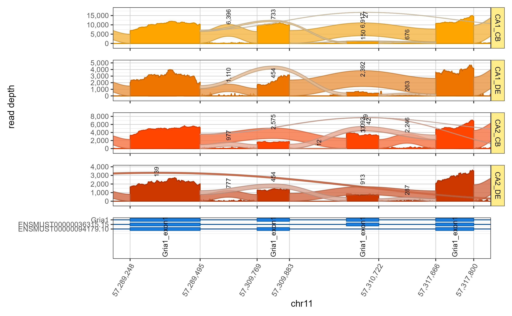
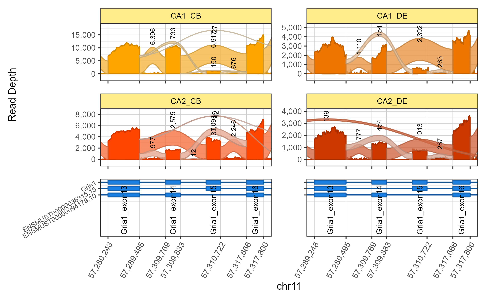
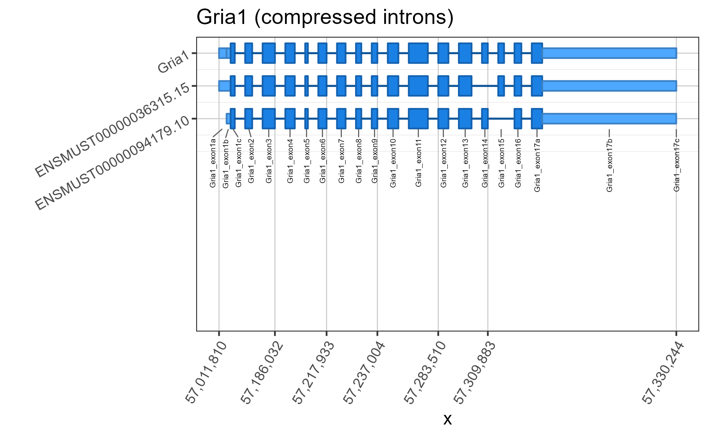
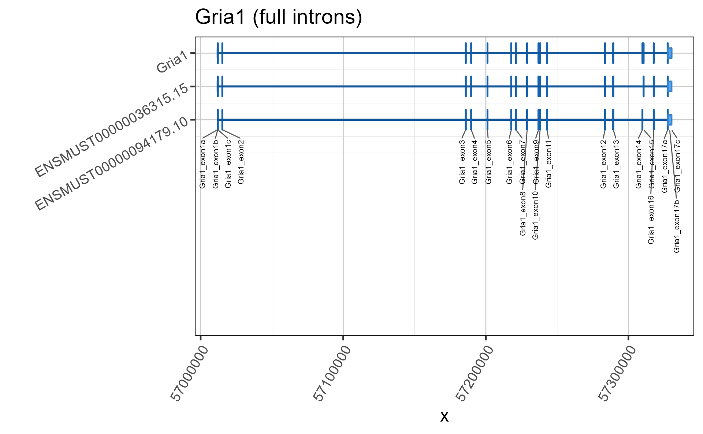

Create a Sashimi Plot
James M. Ward
2026-07-29
Source:vignettes/create-a-sashimi-plot.Rmd
create-a-sashimi-plot.RmdOverview
This vignette is intended to describe how to create a Sashimi plot using RNA-seq data.
- Define coverage and junction data:
filesDF - Provide gene-exon data:
sjenv - Create Splicejam figures.
Data Requirements
The process:
-
Splicejam environment:
- TxDb from Bioconductor, or your own.
- GTF file with specific annotations.
-
Create
filesDF:-
RNA-seq coverage data: bigwig
.bwfiles. -
Splice junction data:
.bed, bigBed.bb, or STAR'SJ.out.tab'.
-
RNA-seq coverage data: bigwig
Create the Splicejam data environment
Create the Splicejam environment using one of the two
paths described above.
For testing, we provide sjenvtest which includes data
for mouse genes: 'Gria1' and 'Ntrk3'.
See Create filesDF
to provide filesDF at this step.
GTF input
sjenv <- new.env();
sjenv <- sashimiDataConstants(envir=sjenv,
empty_uses_farrisdata=FALSE,
filesDF=filesDF,
gtf=gtf);Note: If you call
sashimiDataConstants()with no additional arguments, the defaultempty_uses_farrisdata=TRUEwill try to use data from Farris et al 2019 via the Github R package'jmw86069/farrisdata'.
TxDb input
sjenv <- new.env();
sjenv <- splicejamDataFromTxdb(
txdb=TxDb.Mmusculus.UCSC.mm10.knownGene::TxDb.Mmusculus.UCSC.mm10.knownGene,
ann_lib="org.Mm.eg.db",
filesDF=filesDF);- The
TxDbpackage must already be installed, in this case'TxDb.Mmusculus.UCSC.mm10.knownGene'. - If
ann_libis not provided, it will be determined by the ‘Organism’ found in theTxDbmetadata.
Review sjenv
You can use jamba::sdim() to describe the data. In this
case, use sjenvtest:
jamba::sdim(sjenvtest)#> Loading required namespace: GenomicRanges| rows | cols | class | |
|---|---|---|---|
| color_sub | 16 | character | |
| default_gene | 1 | character | |
| filesDF | 12 | 6 | data.frame |
| flatExonsByGene | 2 | CompressedGRangesList | |
| flatExonsByTx | 10 | CompressedGRangesList | |
| tx2geneDF | 10 | 7 | data.frame |
Create the Splicejam figure
splicejamFigure
The core function splicejamFigure() prepares the
multi-panel plot for a given gene.
Optionally, enable a progress bar with
progressr::handlers(global=TRUE).
# optionally enable progress bar
# progressr::handlers(global=TRUE)
data(sjenvtest)
sjfig <- splicejamFigure(sjenv=sjenvtest,
gene="Gria1")
We recommend using memoise to cache data, with
argument use_memoise=TRUE shown below.
data(sjenvtest)
# Enable memoise
sjfig <- splicejamFigure(sjenv=sjenvtest,
use_memoise=TRUE,
gene="Gria1")splicejamFigure() does the work of calling:
-
prepareSashimi()- coverage and junction data -
plotSashimi()- ggplot2 object -
gene2gg()- gene-transcript-exon model -
patchwork- multipanel figure
Various customizations can be passed to these functions using ‘…’.
See plotSashimi().
Zoom by exon names
The splicejamFigure() arguments include two methods to
zoom to specific exons.
-
'exon_range':charactervector with two exons, for example:use_exon_range=c('Gria1_exon13', 'Gria1_exon16') -
'display_coords':integervector with start and end positions. Note the coordinates must be valid for the gene being displayed.
data(sjenvtest)
sjfig_zoom <- splicejamFigure(sjenv=sjenvtest,
use_exon_range=c('Gria1_exon13', 'Gria1_exon16'),
use_memoise=TRUE,
gene="Gria1")
Adjust column layout
You can adjust the layout, for example to impose two columns use
layout_ncol=2.
Supply sample_id in a specific order to control the
order each panel is displayed.
data(sjenvtest)
sjfig_zoom_2col <- splicejamFigure(sjenv=sjenvtest,
use_exon_range=c('Gria1_exon13', 'Gria1_exon16'),
layout_ncol=2,
use_memoise=TRUE,
gene="Gria1")
Create filesDF
Create 'filesDF' to provide coverage and junctions
data.
An example of the data.frame format is shown below:
| sample_id | url | type | scale_factor |
|---|---|---|---|
| Sample A | ./Sample_A_pos.bw | bw | 1 |
| Sample A | ./Sample_A_neg.bw | bw | 1 |
| Sample A | ./Sample_A_SJ.out.tab | junction | 1 |
| Sample B | ./Sample_B_pos.bw | bw | 1 |
| Sample B | ./Sample_B_neg.bw | bw | 1 |
| Sample B | ./Sample_B_SJ.out.tab | junction | 1 |
| … | … | … | … |
Coverage files
Provide files or web URLs to BigWig .bw or
.bigWig files.
- BigWig data are imported using the amazing
cpp11bigwig::read_bigwig(), which works great on Linux, MacOS, and Windows. - Coverage can only represent one strand at a time. Files with
'neg'or'-'or'minus'in the filename are assumed to be negative strand.
There is a provision to use GRanges data, beyond the
scope of this vignette.
Junction files
Provide files or web URLs to files in one of these formats:
- BED or BED12 file, in text format. BED12 format should use two 1-base “overhang” on each side, with junction defined by the gap.
- SJ.out.tab format as produced by STAR alignment.
- Bigbed
.bbor.bigBedindexed file, best for remote files.
Options 1 and 2 may use any compressed format such as
.gz which is readable by
data.table::fread().
The ‘name’ column is used when names are entirely numeric, otherwise
the ‘score’ column is used. The reason is that ‘score’ is limited to
1000 in bigBed .bb files.
Scale Factor
The optional column 'scale_factor' permits
numeric values used as scalar, to be multiplied by the
score for the corresponding file.
The scale factor is intended to help normalize signal without needing to modify the coverage or junction file.
By default, all values are 1.
Example filesDF
Use the ‘farrisdata’ package, Github
'jmw86069/farrisdata', for an example of filesDF:
farrisdata::farris_sashimi_files_df;| sample_id | url | type | scale_factor |
|---|---|---|---|
| CA1_CB | ./CA1_CB.union.neg.bw | bw | 0.9891766 |
| CA1_CB | ./CA1_CB.union.pos.bw | bw | 0.9891766 |
| CA1_CB | ./CA1_CB.STAR_mm10.combinedJunctions.bed.gz | junction | 0.8796491 |
| CA1_DE | ./CA1_DE.union.neg.bw | bw | 1.2362753 |
| CA1_DE | ./CA1_DE.union.pos.bw | bw | 1.2362753 |
| CA1_DE | ./CA1_DE.STAR_mm10.combinedJunctions.bed.gz | junction | 1.1064974 |
| CA2_CB | ./CA2_CB.union.neg.bw | bw | 0.9817312 |
| CA2_CB | ./CA2_CB.union.pos.bw | bw | 0.9817312 |
| CA2_CB | ./CA2_CB.STAR_mm10.combinedJunctions.bed.gz | junction | 0.8461586 |
| CA2_DE | ./CA2_DE.union.neg.bw | bw | 1.0678433 |
| CA2_DE | ./CA2_DE.union.pos.bw | bw | 1.0678433 |
| CA2_DE | ./CA2_DE.STAR_mm10.combinedJunctions.bed.gz | junction | 1.6993700 |
| CA3_CB | ./CA3_CB.union.neg.bw | bw | 1.0058324 |
| CA3_CB | ./CA3_CB.union.pos.bw | bw | 1.0058324 |
| CA3_CB | ./CA3_CB.STAR_mm10.combinedJunctions.bed.gz | junction | 0.8615462 |
| CA3_DE | ./CA3_DE.union.neg.bw | bw | 1.4419289 |
| CA3_DE | ./CA3_DE.union.pos.bw | bw | 1.4419289 |
| CA3_DE | ./CA3_DE.STAR_mm10.combinedJunctions.bed.gz | junction | 1.1941632 |
| DG_CB | ./DG_CB.union.neg.bw | bw | 0.8449864 |
| DG_CB | ./DG_CB.union.pos.bw | bw | 0.8449864 |
| DG_CB | ./DG_CB.STAR_mm10.combinedJunctions.bed.gz | junction | 0.7705711 |
| DG_DE | ./DG_DE.union.neg.bw | bw | 0.8218802 |
| DG_DE | ./DG_DE.union.pos.bw | bw | 0.8218802 |
| DG_DE | ./DG_DE.STAR_mm10.combinedJunctions.bed.gz | junction | 1.2941457 |
More about gene-exon structure
There are two main sources of gene-exon structures.
Some guidance on which path to follow:
- GTF Path: If you used a GTF file for data processing and need to use the ‘gene_name’ values exactly as defined in that GTF file, choose the GTF path below.
-
TxDb Path: In all other cases, choose a suitable
TxDbfrom Bioconductor, or provide your own customTxDbfile.
TxDb is the “easiest” path to use Splicejam.
In both cases, the input provides a TxDb transcript
database.
- GTF path defines ‘gene_name’ from the GTF file.
-
TxDb path uses Bioconductor ‘SYMBOL’, or you can
provide
tx2geneDFyourself
In future,
EnsDbdata format will also be supported. File an issue on Github to request this change.
GTF File
The GTF file should provide column 9 annotations: The standard GTF input is based on the Gencode GTF format (https://www.gencodegenes.com).
- ‘gene_name’:
charactergene symbol, used as the primary gene identifier in Splicejam. - ‘gene_id’:
characteridentifier, used inTxDbdata but not used in Splicejam otherwise. - ‘transcript_id’:
charactertranscript identifier used to associate transcript to gene.
It should provide features: ‘gene’, ‘transcript’, ‘exon’. ‘CDS’ is used if available.
TxDb
A TxDb transcript database may be obtained from
Bioconductor, such as 'TxDb.Hsapiens.UCSC.hg38.knownGene',
or can be provided as a file.
For more information about creating a TxDb, see
txdbmaker::makeTxDb() which supports using a GTF or GFF3
file; BioMart; UCSC; EnsEMBL; or GRanges data.
The TxDb is used to create 'tx2geneDF' as a
data.frame, using Bioconductor annotation data, which
associates 'transcript_id' to 'gene_name'. You
may also supply a custom 'tx2geneDF'.
The default uses TxDb ‘Organism’ to determine a suitable
annotation library, or use argument 'ann_lib'. Common
examples:
-
'org.Hs.eg.db'for Homo sapiens (Human) -
'org.Mm.eg.db'for Mus musculus (Mouse)
For other methods to produce 'tx2geneDF', see
tximport::tximport().
Detected genes or detected transcripts
You can supply 'detectedTx' with specific
'transcript_id' entries, which will subset the transcripts
used to define flattened gene-exon models. It is possible to apply
'detectedTx' either before or after the initial processing
step.
When providing 'detectedTx' upfront, the flattened
gene-exon model will only contain exons from those transcripts. The
exons are numbered at this stage, and may differ depending which
transcripts are used.
If you use all transcripts upfront, then 'detectedTx'
later, the gene-exon model will be numbered using all transcripts, while
the figure will only display transcripts defined in
'detectedTx'.
Heuristics for detected transcripts
See defineDetectedTx() to help define detected
transcripts, intended to work with data produced by
tximport::tximport(). It often reduces the total
transcripts to 60% the original size.
The heuristics:
- Minimum count: require a minimum plausible supporting data. For example, at least 8 read counts.
- Minimum TPM abundance: require minimum transcript abundance in TPM units For example, at least 0.1 TPM.
- Percent max per gene: using TPM or read count. TPM is recommended as a per-molecule metric. For example, the least abundant isoform must be at least 10% of the most abundant isoform. This step helps remove extremely low abundance isoforms which often appears as noise in transcript quantitation results. See genes like “GAPDH” and “ACTB”.
For additional information about transcript quantitation, see:
Salmon (Patro et al 2017, https://combine-lab.github.io/salmon/)
Kallisto (Bray et al 2016, https://pachterlab.github.io/kallisto/about)
Bonus: Plot gene-exon models
Once the Splicejam environment sjenv is
prepared, you can plot the gene model and review the exon numbering
using splicejam::gene2gg().
data(sjenvtest)
ggGria1 <- gene2gg(
sjenv=sjenvtest,
gene="Gria1");
print(ggGria1 + ggplot2::ggtitle("Gria1 (compressed introns)"));
The default above will compress the introns to a fixed width, to help see each exon in detail.
You can show introns at full size using
compressGaps=FALSE:
ggGria1_wide <- gene2gg(
sjenv=sjenvtest,
compressGaps=FALSE,
gene="Gria1");
print(ggGria1_wide + ggplot2::ggtitle("Gria1 (full introns)"));
Splicejam Shiny app
Using the sjenv data environment, you can
run the Splicejam shiny app with
launchSashimiApp(envir=sjenv). It will open within RStudio
or Positron, or will open the configured web browser from an R
console.
data(sjenvtest)
launchSashimiApp(envir=sjenvtest)Change the host and port
- Use
host='0.0.0.0'to make the Sashimi app accessible to other computers on your network. - Use
host='localhost'orhost='127.0.0.1'to limit access to your computer. - If
'port'is not defined, it chooses at random. - If
'port'is defined, choose 8000 or higher.
To make the app available outside your network, consider https://connect.posit.cloud/. Do not make your computer accessible to the internet.
An example:
launchSashimiApp(
empty_uses_farrisdata=FALSE,
envir=sjenv,
options=list(
port=8080,
host="0.0.0.0"))Other custom options
The custom options must be added to the sjenv in the
environment. For example, you can set two-column layout by
default with:
sjenv$layout_ncol=2
These options can be customized by the user, and only change the initial default condition.
Other options:
| Parameter | Description |
|---|---|
| default_gene | character: gene symbol for the initial figure. |
| layout_ncol | integer: number of columns for the panel layout. |
| panel_height | integer: pixel height for each panel, default 200. |
| gene_panel_height |
integer: pixel height for the gene panel, default 400. Usually about 2x the panel_height. |
| min_junction_reads |
numeric: minimum junction reads, all others are hidden. Default 10. |
| share_y_axis |
logical: whether to share the y-axis across all panels. Default FALSE. |
| use_exon_range | character: vector with first and last exons, default NULL. |
| gene_coords_default | integer: coordinate range, default NULL. |
| label_junctions | logical: whether to display junction counts, default TRUE. |
| show_gene_model |
logical: whether to show the gene-exon model, default TRUE. Not yet re-implemented. |
| font_sizing |
character: label matching one of the options shown. Default ‘Default’. Range from ‘-4 smaller’ to ‘+4 larger’. |
| exon_font_sizing |
character: label matching one of the options shown. Default ‘Default’. See font_sizing. |
| junction_alpha |
numeric: default alpha transparency, default 0.7. (70% opaque) |
| junction_arc_factor |
character: string matching one of the options shown. Default ‘Default’. Range from ‘-2 flat’ to ‘+3 higher’. |
| junction_arc_minimum | numeric: minimum arc height per junction, default 500. |
| aboutExtra |
character or htmlwidgets: text suitable to display as HTML. Shown in the ‘About’ tab to describe experimental data. |
For example:
data(sjenvtest)
# or prepare your own environment
# sjenv <- sashimiDataConstants()
sjenvtest$default_gene <- "Ntrk3"
sjenvtest$panel_height <- 150;
sjenvtest$gene_panel_height <- 300;
sjenvtest$use_exon_range <- c("Ntrk3_exon1", "Ntrk3_exon23a");
launchSashimiApp(envir=sjenvtest)